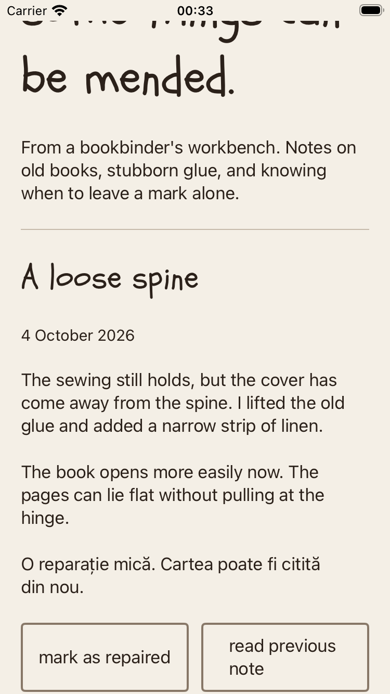
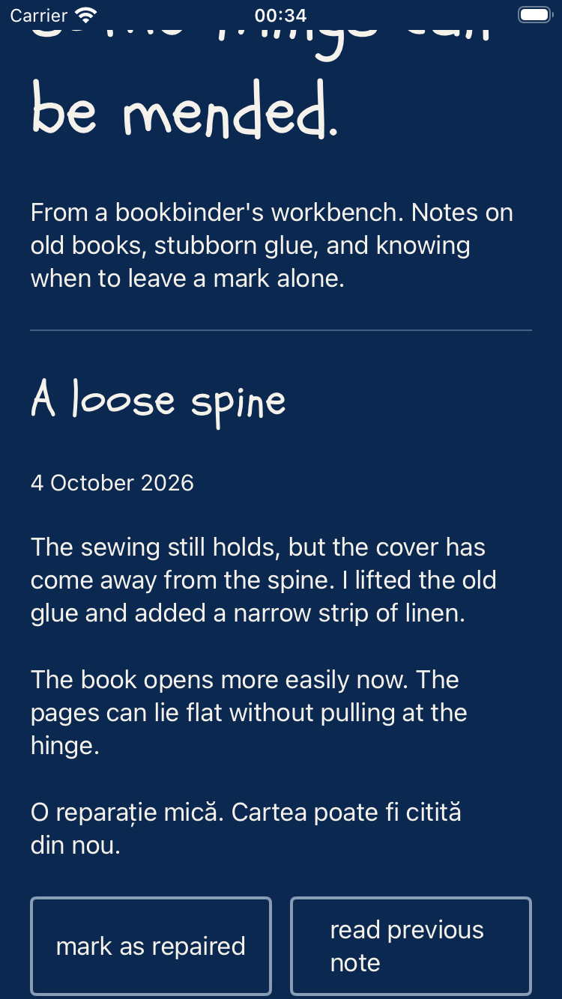
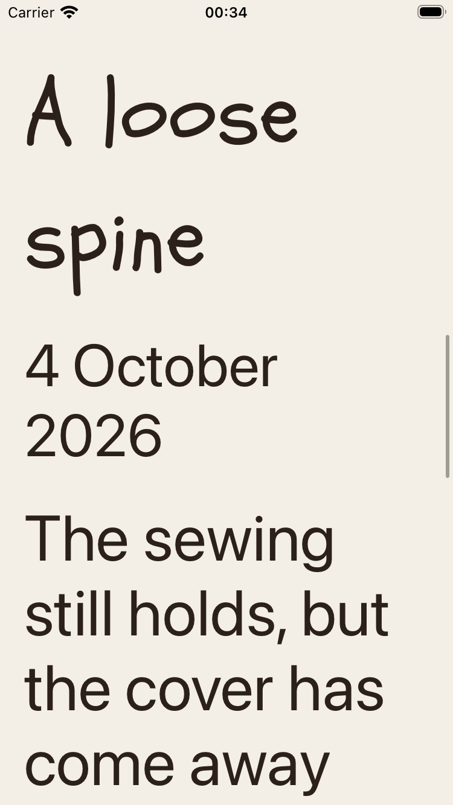
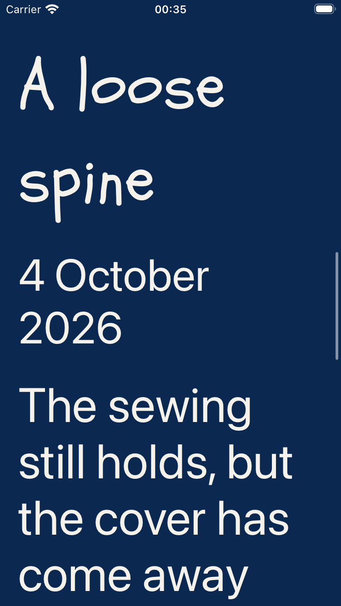

Native reading navigation
XCTest swipes and taps exposed two defects that the layout checks missed: repaired state leaking between notes and a new heading left off screen at the largest text size.
The corrected screen passes four gesture scenarios and twelve unfiltered accessibility audits. These are actual simulator captures attached by XCTest with native animations enabled.
Read the outcome · UI test source · Results
After reading the next note




Retained failures
State leaked at ordinary size. The next heading was off screen at the largest size. Both failures used the source at commit 45a7f87.
Simulator tests and automated audits do not establish VoiceOver order, hardware keyboard use or physical-device behavior.